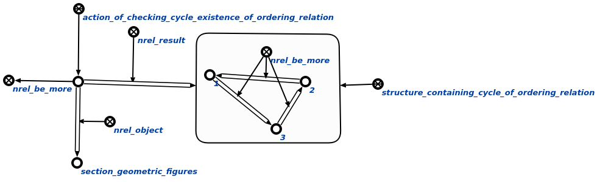

Команда поиска цикла предназначена для обнаружения в базе знаний таких ошибок, как циклы. Первым аргументом команды является отношение порядка, наличие зацикленности которого необходимо проверить. Вторым аргументом команды является раздел базы знаний, в которой необходимо произвести проверку на наличие цикла. Второй аргумент можно не указывать, если необходимо производить данную проверку в рамках всей базы знаний. Если в рамках области действия команды существует(-ют) цикл(-ы), то результатом выполнения команды является узел ответа, который содержит в себе структуру, которая принадлежит множеству неправильных структур и содержащая в себе первый найденный цикл. Если циклы не найдены, то результатом выполнения команды является пустой узел ответа. Результат выполнения команды поиска циклов на отношении включения показан ниже :
